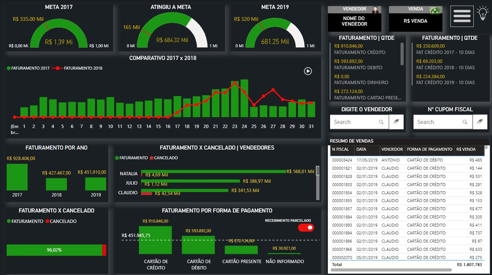

Ultimamente venho trabalhando na criação de alguns dashboards em Power BI, além de uma análise mais exploratória tentando adentrar eno universo da estatística descritiva. Irei disponibilizar alguns links que levam até a página dos dashboards web, então não se preocupem! :)
Ao clicar em qualquer Dashboard, você será levado para a apresentação total dele.

Dashboard do setor de vendasDashboard de uma empresa de Locação de VeículosDashboard analítico de uma Universidade